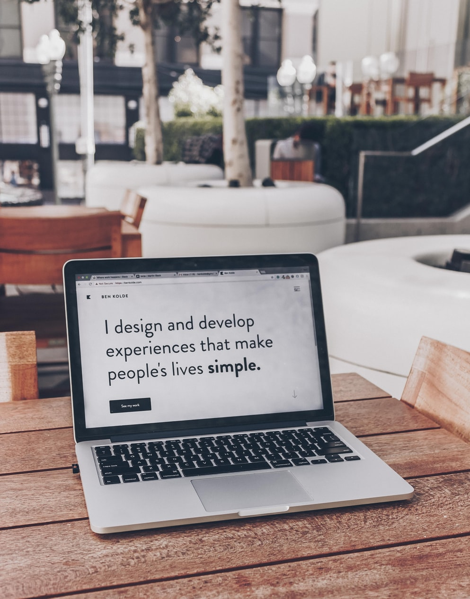

- 문구
- 포트폴리오
- 광고영상
광고동영상
로고 만드는 로네이도입니다. 로네이도는 고객의 만족과 성공을 위해 존재합니다.
로네이도는 고객의 관점과 디자인이너의 시각을 통합하여 로고를 제작합니다. 잠재 고객에게 깊은 인상을 각인시킬 수 있도록 마케팅적인 면까지 고려하여 퀄리티 있는 로고를 전달해드립니다.
고객의 관점에서 볼 수 있는 시야를 확보하기 위해서 필요한 질문들로 구성된 인터뷰지를 사용하고 있으며, 원하실 경우 유선으로 상담을 하고 있습니다.

단지 저렴하다고 결제하지는 말아주세요. 포트폴리오를 보시고 선택해주세요.